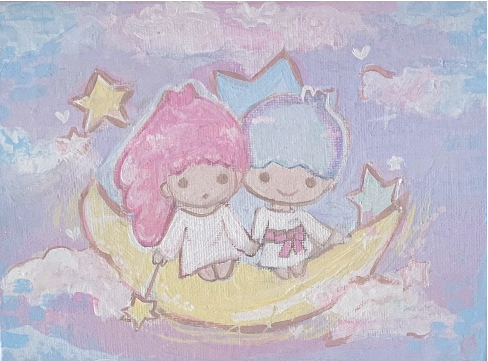
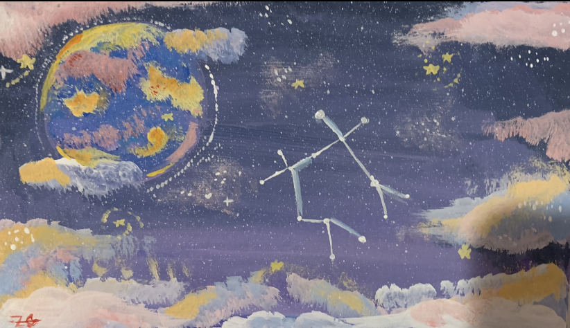
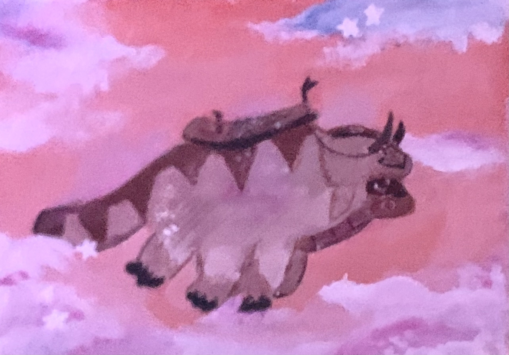
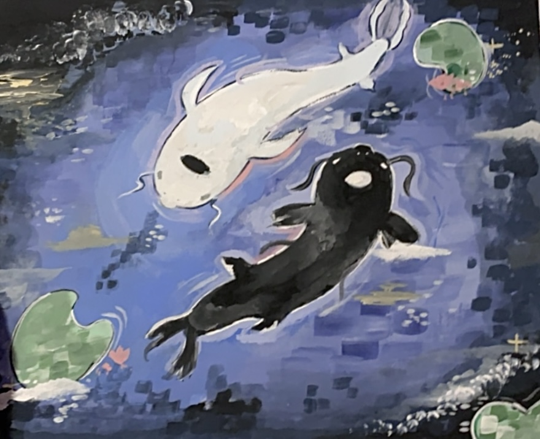
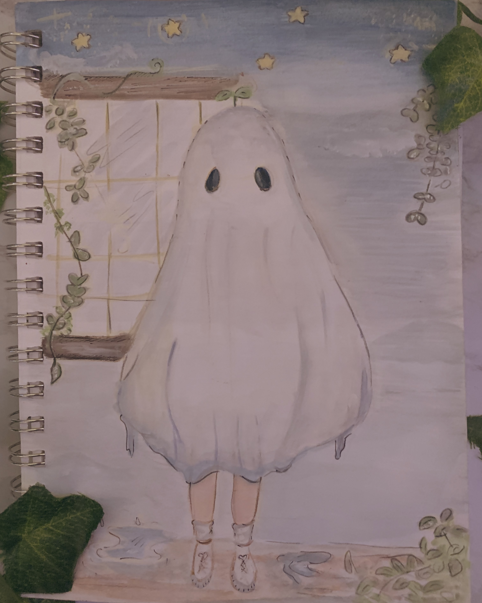

"Enchanted Forest" - 2019
This is one of my favorite pieces, I used oil paints & colored pencils to make it.
"Fade" - 2022
I made half of this piece traditionally using acrylic paints and later added on to it digitally. The original piece is of two fish.
"Little Twin Stars" - 2021
{kind=link}
My friend gifted me some oil pastels and this was the first thing I made using them! These are the "Little Twin Stars" from Sanrio.
"A Glance at the Stars" - 2019
{kind=link}
I painted this with acrylic paint, It's the planet mercury with some stars and a constellation!
"Appa Yip Yip!" - 2021
{kind=link}
This is a fluffy flying creature - Appa. He's from one of my favorite series "Avatar The Last Airbender".
"Bear Lab" - 2022

I made this digitally last winter. I thought it would be fun to imagine happens when scientists aren't in lab.
"Tui and La" - 2020
{kind=link}
This is the orginal painting that I later added elements to digitally. I painted this with acrylic paints in 2020. These are the fish from one of my favorite series "Avatar The Last Airbender".
"The only one" - 2020
{kind=link}
I made this on Halloween in 2020, at the time there was a trend to dress up as a ghost and have a photoshoot and I used that as my inspiration. I used colored pencils and gouache to make this shy ghost.
"Disco" - 2010

This is a drawing I made when I was eight! It was for an online game's art contest. I drew Gurgle and myself at a disco party, I was the DJ. I used a 12 pack of crayola colored pencils to make this masterpiece.